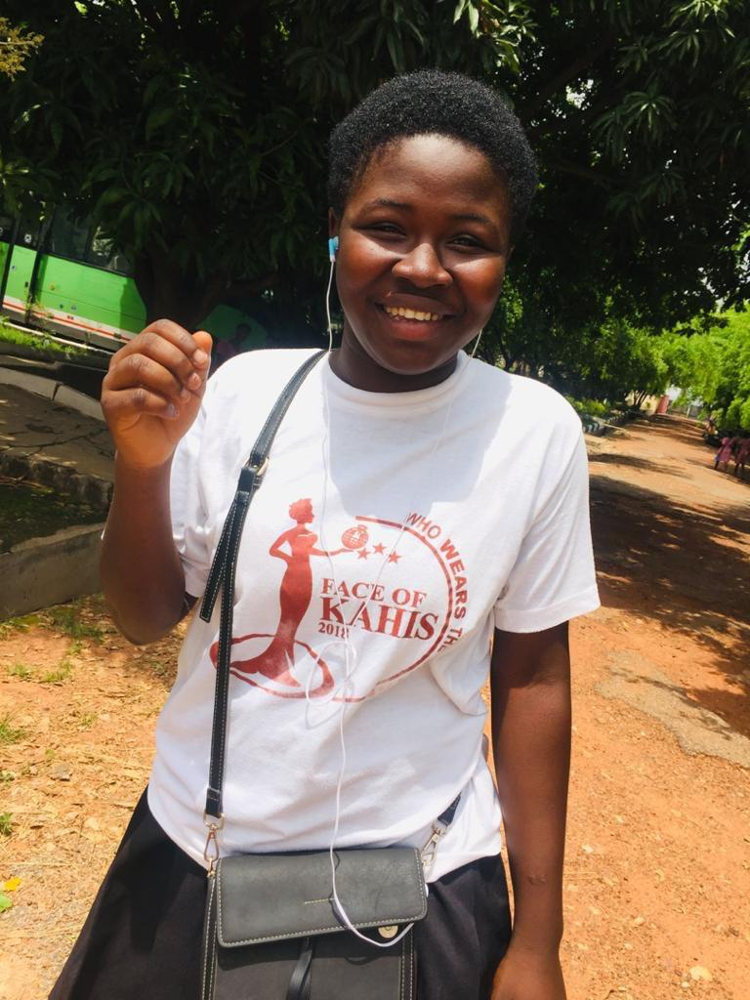
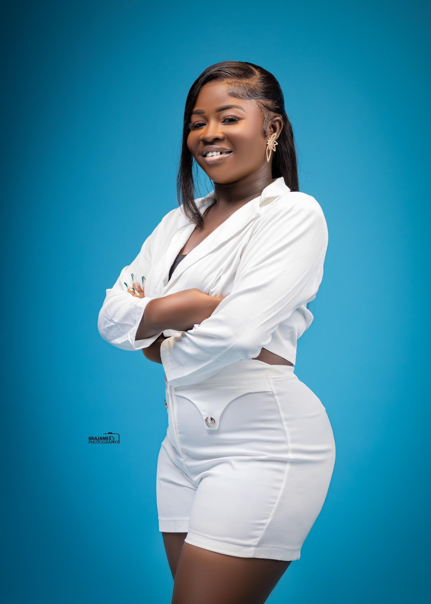

Welcome to My Memoir
Hello! My name is Matilda Mensah, and I come from Pakyi Number 2 in the Ashanti Region of Ghana. I am from a family of nine, and I am the third born and the first female child. This memoir is a reflection of my life, my passions, and my dreams.
Picture 1: Childhood
This is a picture of me as a child, full of dreams and curiosity. Growing up in a large family taught me the values of sharing, patience, and hard work.
Picture 2: Adulthood
This is a picture of me as an adult, reflecting on the journey so far. I have grown into a hardworking and curious person who loves to learn new things.
About Me
I am a hardworking and curious person who loves to learn new things. My favorite subject is English, and I enjoy reading books, solving puzzles, and exploring creative activities. In my free time, I like to listen to music, which helps me relax and stay inspired.
I believe in honesty, kindness, and perseverance. These values guide me in everything I do. My goal is to become an air hostess and contribute positively to society. I am a kind-hearted person, and I love to give when I have. Traveling the world is one of my biggest dreams, and that is the main reason why I am studying Hospitality Management.
Equations That Inspired Me
Complex Integral and Series Equation:
\[ \left( 16 \int_{0}^{\pi} \int_{0}^{1} x^{2} \sin(y) \, dx \, dy \right) \left( \frac{\sum_{n=-\infty}^{\infty} \frac{1}{1+n^2}}{\coth(n)} \right)^{2} + 5 = 69 \]
Infinite Series Equation:
\[ \sum_{n=1}^{\infty} \frac{1}{n^2} \]
Relativistic and Trigonometric Equation:
\[ A = \frac{\sqrt{1 - \frac{v^2}{c^2}}}{\sin(\psi + \theta)} \]